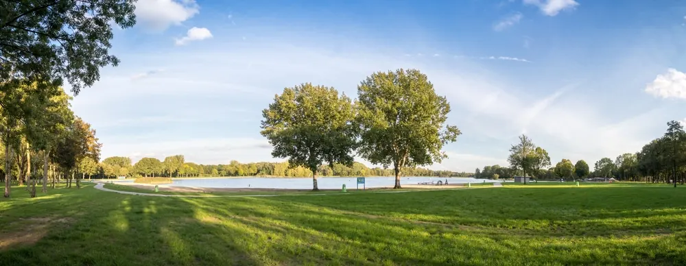
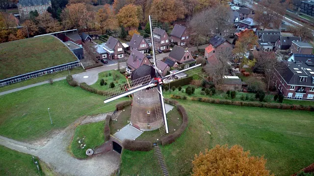
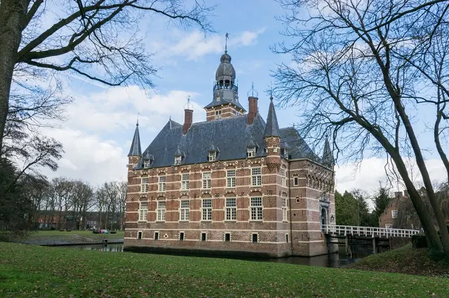
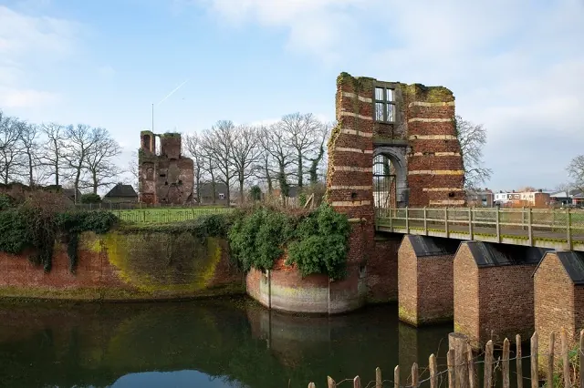
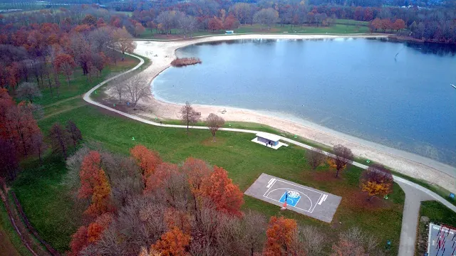
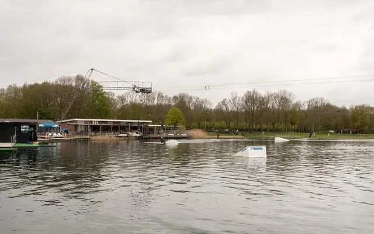
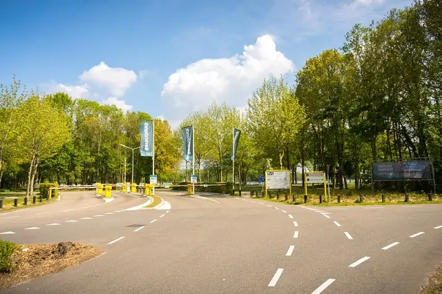
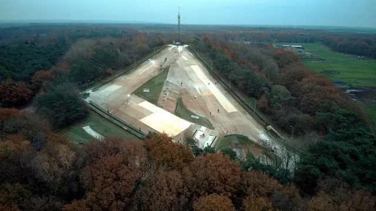

Bestemming bij Nijmegen
Wijchen
Kom voor het kasteel, blijf voor de charme in Wijchen.




Ontdek Wijchen, een charmante Gelderse stad vol historische wonderen en natuurlijke pracht. Bezichtig het indrukwekkende 14e-eeuwse Kasteel Wijchen en ontdek de lokale geschiedenis in het museum. Bewonder de nog werkende Wijchense Molen en proef lokaal gemalen producten. Verlies jezelf in de schoonheid van het Wijchens Meer, of verken de omringende natuur te voet of per fiets. Afsluitend biedt het levendige stadscentrum een uitnodigende plek om te winkelen en te ontspannen.
Kasteel Wijchen
Kasteel Wijchen, een prachtig 14e-eeuws bouwwerk, vormt het hart van de stad. Omgeven door een idyllisch park, nodigt het kasteel bezoekers uit om zijn rijke geschiedenis te verkennen. Binnen de muren vind je het Museum Kasteel Wijchen, waar tentoonstellingen variëren van lokale archeologie tot boeiende geschiedenisverhalen. Dit architecturale juweel is niet alleen een symbool van Wijchens erfgoed, maar ook een levendig cultureel centrum.
Recreatiegebied De Berendonck
De Berendonck is een recreatiegebied in Wijchen dat bezoekers een breed scala aan activiteiten biedt. Met een prachtig meer, zandstranden en groene zones, is het de perfecte locatie voor zwemmen, zonnebaden, wandelen en fietsen. Voor de avontuurlijken onder ons, biedt Thermen Berendonck, een luxe wellnessresort, unieke spa-ervaringen. De Berendonck is een paradijs voor natuur- en sportliefhebbers, en een heerlijke plek voor ontspanning dichtbij de stad.



Wijchense Molen
De Wijchense Molen, een historisch monument in de kern van Wijchen, draagt bij aan de unieke charme van de stad. Deze volledig functionerende windmolen maalt nog steeds graan, een fascinerend proces dat bezoekers zelf kunnen zien. In de molenwinkel kun je versgemalen producten en andere lokale delicatessen kopen. Met zijn charmante uiterlijk en actieve rol in de gemeenschap is de Wijchense Molen een onmisbaar onderdeel van de lokale cultuur.

De Wijchense Berg
De Wijchense Berg is een populaire outdoor bestemming in Wijchen, ideaal voor zowel avontuurlijke activiteiten als ontspanning. Deze heuvel biedt fantastische mogelijkheden voor wandelen, mountainbiken en genieten van het prachtige uitzicht op het omliggende landschap. In de winter verandert de berg in een skicentrum, compleet met een kunstskibaan voor ski- en snowboardliefhebbers. De Wijchense Berg is een natuurlijke speeltuin die het hele jaar door plezier en avontuur biedt.
Evenementen Wijchen
Bekijk hier de evenementen die gehouden worden in Wijchen
Lees ook

3x een leuke Bed and Breakfast in Wijchen
De meest opvallende oude bezienswaardigheid in Wijchen is het centraal gelegen Kasteel van Wijchen, dat voor het eerst genoemd wordt in archiefstukken uit…

Op vakantie dichtbij huis: drie heerlijke vakantieparken vlakbij Nijmegen
Blijf je tijdens de vakantie graag dichtbij huis, maar wil je wel het gevoel hebben dat je er heerlijk tussenuit bent geweest? In de omgeving van Nijmegen…

Zin in zee of stad? 3x perfecte uitstapjes buiten Nijmegen
Soms is het heerlijk om even de stad uit te gaan en een dag of weekend iets nieuws te ontdekken. Vanuit Nijmegen ben je in no time aan zee, in een…